Panduan lengkap memakai dan memahami sistem kasir & inventori LunaPOS. Ditulis dengan bahasa sederhana agar mudah dipahami oleh semua orang — mulai kasir, staf gudang, manajer toko, sampai pemilik usaha.
Bagian ini berisi data identitas dokumen (siapa yang membuat, kapan, dan untuk apa).
| Item | Keterangan |
|---|---|
| Nama Sistem | LunaPOS — Kasir & Inventori |
| Project | LunaPOS |
| Client | Internal / Usaha Multi-cabang |
| Versi | 1.0.0 |
| Tanggal | 05 Agustus 2026 |
| Penulis | Tim Dokumentasi |
| Reviewer | Belum tersedia pada source code |
| Approver | Belum tersedia pada source code |
Daftar perubahan pada dokumen ini. Setiap kali dokumen diperbarui, versi baru dicatat di sini.
| Versi | Tanggal | Perubahan | Penulis |
|---|---|---|---|
| 1.0 | 05-08-2026 | Dokumen awal (analisis source code) | Tim Dokumentasi |
Bab ini menjelaskan apa itu LunaPOS, mengapa dibuat, dan siapa saja yang memakainya.
Toko atau usaha yang memiliki beberapa cabang sering kesulitan mencatat penjualan, mengawasi barang, mengatur utang/piutang, dan membuat laporan. Pencatatan manual (buku tulis atau Excel) lambat dan mudah salah. LunaPOS dibuat agar semua pekerjaan itu bisa dilakukan dengan cepat dan rapi dalam satu program.
Dokumen ini menjadi acuan resmi untuk:
Dokumen ini mencakup seluruh bagian LunaPOS: login, dashboard, kasir, barang, master data, supplier, customer, cabang, user, pembelian, stok, transfer antar cabang, stok opname, kas & shift, promo, laporan, dan cetak barcode.
| Pengguna | Penjelasan sederhana |
|---|---|
| Super Admin / Admin Pusat | Orang yang mengelola seluruh sistem (semua cabang) |
| Manager Cabang | Kepala toko cabang; menyetujui mutasi barang & opname |
| Kasir | Petugas di depan kasir yang melayani pembayaran |
| Staf Gudang | Petugas yang mengurus stok & perpindahan barang |
| Tim Pengembang | Teknisi yang memelihara dan mengembangkan sistem |
| Istilah | Arti sederhana |
|---|---|
| POS | Kasir — tempat di mana transaksi penjualan diproses |
| SKU / Kode Barang | Nomor unik pengenal sebuah barang |
| BOGO | Promo beli gratis, contoh "Beli 2 Gratis 1" |
| Hutang | Uang yang masih harus kita bayar ke pemasok |
| Piutang | Uang yang masih harus dibayar pelanggan kepada kita |
| Stok Opname | Menghitung ulang barang fisik untuk dicocokkan dengan catatan |
| Shift | Jam kerja kasir (dibuka saat mulai kerja, ditutup saat selesai) |
| JWT | Kartu tanda masuk digital untuk mengamankan aplikasi |
| Singkatan | Kepanjangan |
|---|---|
| API | Application Programming Interface — "jalur komunikasi" antar program |
| DB | Database — tempat penyimpanan data |
| QRIS | Standar kode QR pembayaran di Indonesia |
| RBAC | Pengaturan hak akses berdasarkan peran pengguna |
| CSV | Format file tabel yang bisa dibuka di Excel |
LunaPOS adalah "kasir digital" sekaligus "buku catatan barang" yang bekerja otomatis. Jualan, stok, utang, dan laporan jadi satu tempat.
LunaPOS adalah aplikasi kasir dan pengelola stok barang yang berjalan di browser (Chrome/Edge/Firefox). Aplikasi ini bisa dipakai di satu toko atau banyak cabang sekaligus. Semua data — penjualan, barang, pelanggan, utang, dan laporan — tersimpan terpusat dan bisa dilihat oleh pusat.
flowchart TD
A["Login"] --> B["Dashboard"]
B --> C["Kasir POS"]
B --> D["Data Barang, Supplier, Customer"]
C --> E["Penjualan"]
E --> F{"Metode Bayar"}
F --> G["Cash / Transfer / QRIS"]
F --> H["Hutang - Piutang"]
D --> I["Pembelian"]
I --> J["Stok Masuk"]
D --> K["Stok Opname & Mutasi"]
K --> L["Persetujuan Manager"]
E & I & K --> M["Kas & Shift"]
M --> N["Laporan & Dashboard"]
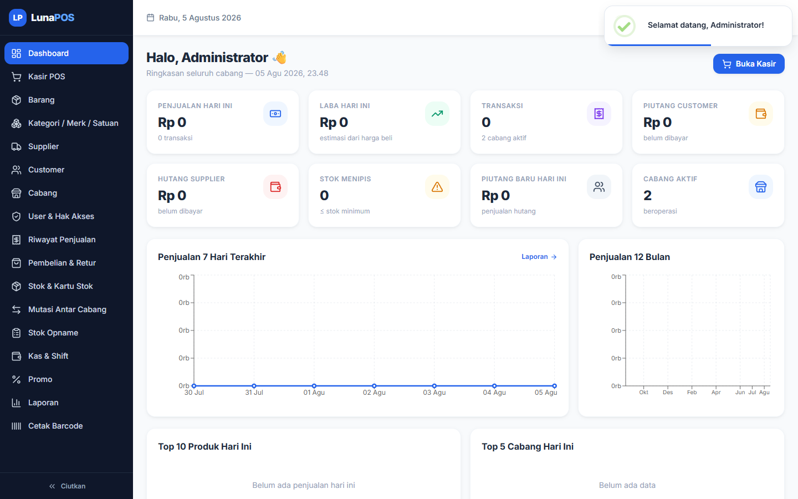
Supaya LunaPOS berjalan lancar, komputer perlu memenuhi syarat di bawah ini.
| Komponen | Minimal | Disarankan |
|---|---|---|
| Prosesor | 2 inti, 2.0 GHz | 4 inti, 3.0 GHz |
| RAM | 4 GB | 8 GB |
| Penyimpanan | 10 GB | 50 GB (SSD) |
| Scanner Barcode | USB / colok keyboard | Scanner wireless + kamera |
| Printer | Printer biasa (A4) | Printer thermal 58/80 mm |
| Komponen | Versi |
|---|---|
| Node.js | 18 ke atas (untuk menjalankan server) |
| MySQL | 8.x (database, disarankan via Laragon) |
| npm | 10 ke atas |
| Laragon (opsional) | Paket bawaan Windows (Apache/MySQL) |
Sistem punya 5 jenis pengguna: Super Admin, Admin Pusat, Manager Cabang, Kasir, dan Gudang. Setiap jenis punya batasan menu yang berbeda. Detailnya ada di Bab 7.
Login adalah "pintu masuk" ke aplikasi. Masukkan nama pengguna dan kata sandi, lalu Anda masuk ke dashboard.
http://localhost:5173).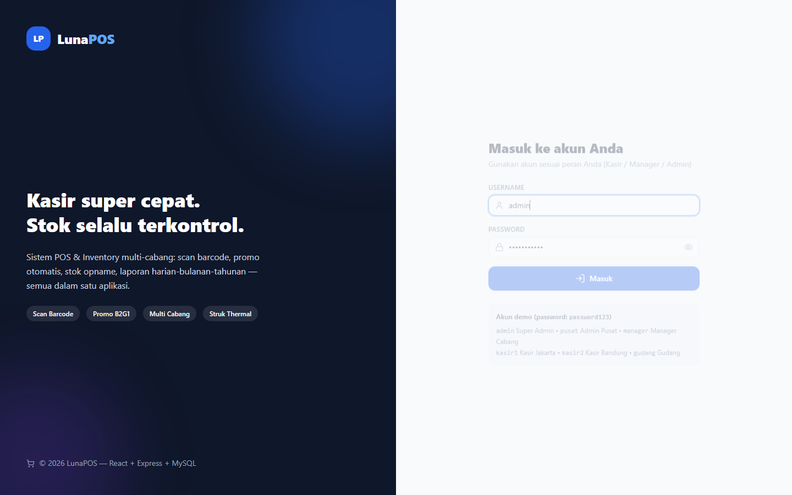
Jika lupa kata sandi, minta admin me-reset lewat menu User & Hak Akses. Admin bisa mengatur ulang kata sandi user menjadi yang baru (minimal 6 karakter).
| Kolom | Aturan | Pesan jika salah |
|---|---|---|
| Username | Wajib diisi | Username wajib |
| Password | Wajib diisi | Password wajib |
| Kredensial | Harus cocok & akun aktif | Username atau password salah / Akun nonaktif |
http://localhost:5000/api/health).Semua menu di LunaPOS mengikuti pola yang sama: buka halaman → cari data → klik tombol → isi form → simpan → muncul notifikasi berhasil. Di bawah ini panduan tiap menu.
Melayani pembayaran di kasir.
Menu samping (sidebar) → Kasir POS.
| Tombol | Fungsinya |
|---|---|
| Scan | Memindai barcode dengan kamera |
| Hold | Menyimpan keranjang untuk dilanjutkan nanti |
| Recall | Mengambil kembali transaksi yang disimpan tadi |
| Bayar | Membuka layar pembayaran |
| Struk | Mencetak struk |
| + / − | Menambah/mengurangi jumlah barang |
| Kolom | Keterangan |
|---|---|
| Pencarian/Scan | Tempat mengetik kode, nama, atau barcode barang |
| Qty | Jumlah barang |
| Harga | Harga jual per satuan (sudah terisi otomatis dari data barang) |
| Diskon | Potongan harga per barang |
| Customer | Nama pelanggan (wajib untuk penjualan hutang) |
| Jatuh Tempo | Tanggal batas bayar untuk penjualan hutang |
| Masalah | Solusi |
|---|---|
| Stok tidak cukup | Kurangi jumlah barang, atau isi stok lewat menu Pembelian |
| Barcode tidak ditemukan | Cek barcode barang, atau tambahkan barang baru |
| Kamera tidak bisa dipakai | Izinkan akses kamera di browser; pakai koneksi aman (HTTPS/localhost) |
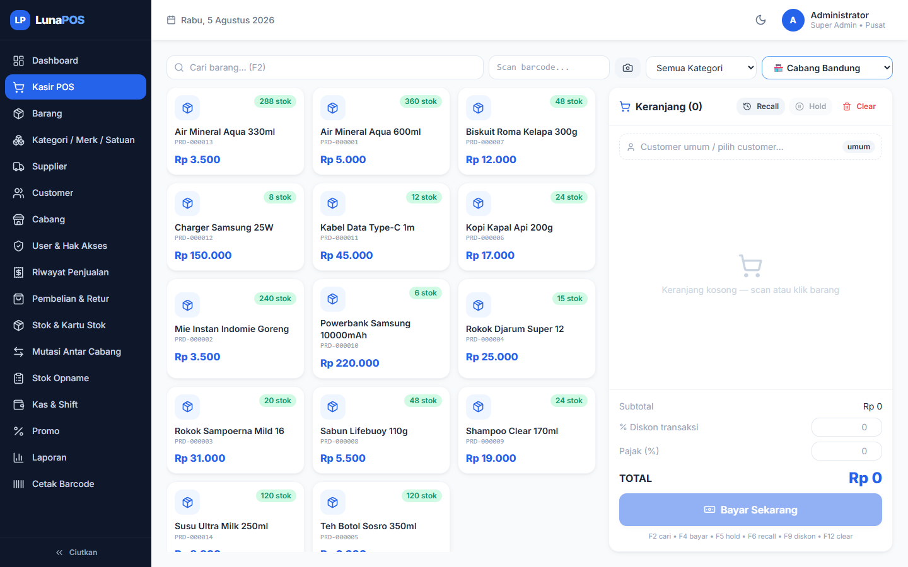
Mendaftarkan dan mengelola semua barang yang dijual.
| Kolom | Wajib? | Keterangan |
|---|---|---|
| Nama Barang | Ya | Nama produk |
| Kategori | Tidak | Golongan barang (makanan, minuman, dll) |
| Merk | Tidak | Merek produk |
| Satuan Dasar | Ya | Satuan terkecil (pcs, lusin, dus) |
| Barcode | Tidak | Kode garis pada kemasan |
| Harga Beli / Retail / Grosir / Member | Tidak | 4 jenis harga |
| Diskon Default | Tidak | Potongan harga biasa (0–100%) |
| Stok Minimum | Tidak | Batas stok; di bawah ini dianggap menipis |
| Foto | Tidak | Gambar produk (JPG/PNG/WEBP, maksimal 2 MB) |
| Satuan (tabel) | Tidak | Satuan lain + nilai konversi + harga |
Mengelola data pelengkap: golongan barang, merk, dan satuan.
Nama wajib diisi dan harus unik. Data yang dihapus sebenarnya hanya dinonaktifkan, tidak benar-benar hilang.
Mendata pemasok barang dan memantau hutang belanja.
Mendata pelanggan, terutama yang sering belanja atau belanja hutang.
Mendata toko/cabang yang memakai LunaPOS.
Mendaftarkan pengguna dan mengatur batasan menu tiap jenis pengguna.
password123 (bisa diganti user).Super Admin selalu punya akses penuh dan tidak bisa dibatasi.
Melihat dan memeriksa semua transaksi yang sudah terjadi.
Mencatat pembelian barang dari pemasok dan mengembalikan barang yang rusak/salah.
Memantau jumlah barang di gudang/toko.
Memindahkan barang dari satu cabang ke cabang lain.
Menghitung ulang barang di rak untuk dicocokkan dengan catatan komputer.
Mencatat uang kasir: uang awal, uang masuk/keluar, dan saldo saat shift selesai.
Membuat program diskon atau beli gratis untuk menarik pembeli.
Melihat rekap penjualan, pembelian, kas, stok, dan utang/piutang.
Mencetak label barcode untuk ditempel di barang.
Halaman utama yang menampilkan ringkasan kondisi toko hari ini.
Tabel di bawah ini merangkum isi setiap halaman: apa fungsinya, komponen apa saja yang ada, dan fitur apa yang tersedia.
| Halaman | Tujuan | Komponen Utama | Filter/Search | Tabel | Chart | Modal |
|---|---|---|---|---|---|---|
| Login | Masuk ke aplikasi | Form + logo | - | - | - | - |
| Dashboard | Ringkasan bisnis | Kartu angka, grafik, daftar | - | Top 10 barang | Line, Bar | - |
| Kasir POS | Transaksi penjualan | Keranjang, scanner | Cari/scan | Keranjang | - | Bayar, Scanner, Hold |
| Barang | Master barang | Tabel + form barang | Cari, kategori, stok menipis | Ya + halaman | - | Form + barcode |
| Kategori/Merk/Satuan | Data pelengkap | Tabel + form | Cari | Ya | - | Form |
| Supplier | Data pemasok | Tabel + detail | Cari | Ya | - | Form + detail |
| Customer | Data pelanggan | Tabel + detail | Cari | Ya | - | Form + detail |
| Cabang | Data toko/cabang | Tabel + form | Cari | Ya | - | Form |
| User & Hak Akses | Data pengguna | Tabel + editor hak akses | Cari, jenis | Ya | - | Form + hak akses |
| Riwayat Penjualan | Periksa transaksi | Tabel + detail | Tanggal, cara bayar, cari | Ya | - | Detail, bayar piutang |
| Pembelian & Retur | Beli barang | Tabel + form pembelian | Tanggal, supplier, cari | Ya | - | Form + retur |
| Stok & Kartu Stok | Pantau stok | Tabel, kartu stok | Barang, jenis, tanggal | Ya | - | Kartu stok |
| Mutasi Antar Cabang | Pindah stok | Tabel + form | Status | Ya | - | Form + detail |
| Stok Opname | Hitung fisik | Tabel + sesi | Status | Ya | - | Sesi + isi jumlah |
| Kas & Shift | Kelola uang kasir | Tabel + shift | Jenis, tanggal | Ya | - | Shift + transaksi |
| Promo | Program diskon | Tabel + form promo | Cari, aktif | Ya | - | Form promo |
| Laporan | Rekap & analisis | Tab, grafik, ringkasan | Periode, rincian | Ya | Bar, Line, Pie | - |
| Cetak Barcode | Cetak label | Daftar + pratinjau | Cari | Ya (pilih) | - | - |
| Profile | Ganti kata sandi | Form | - | - | - | - |
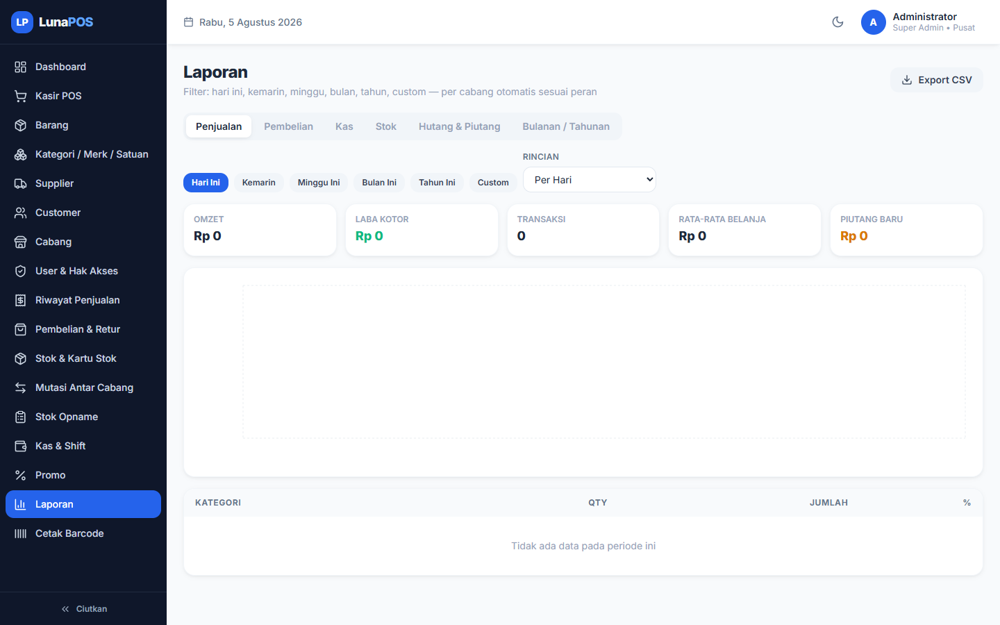
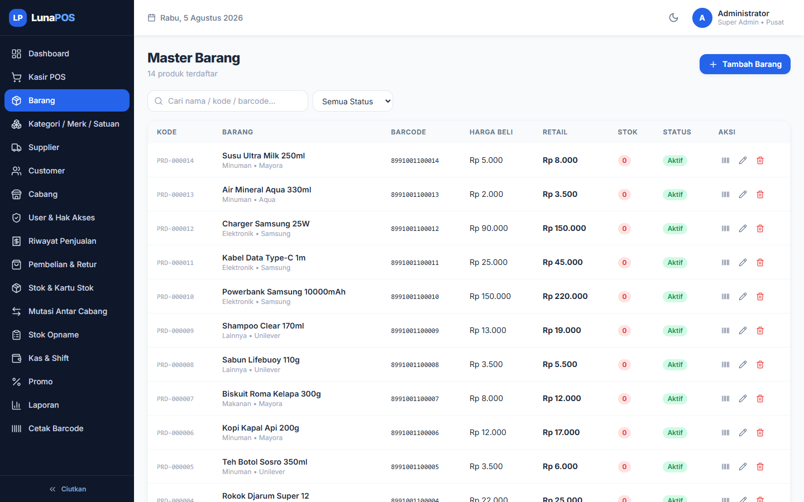
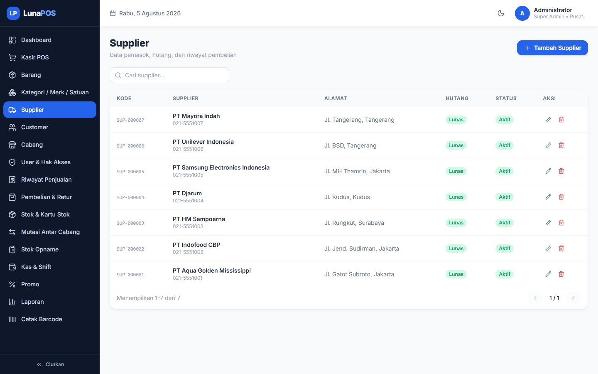
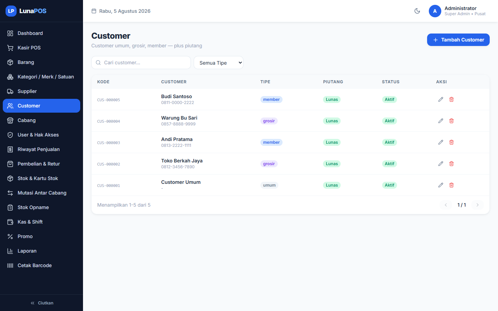
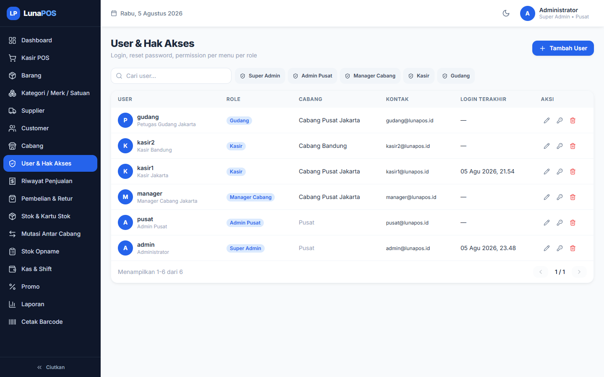
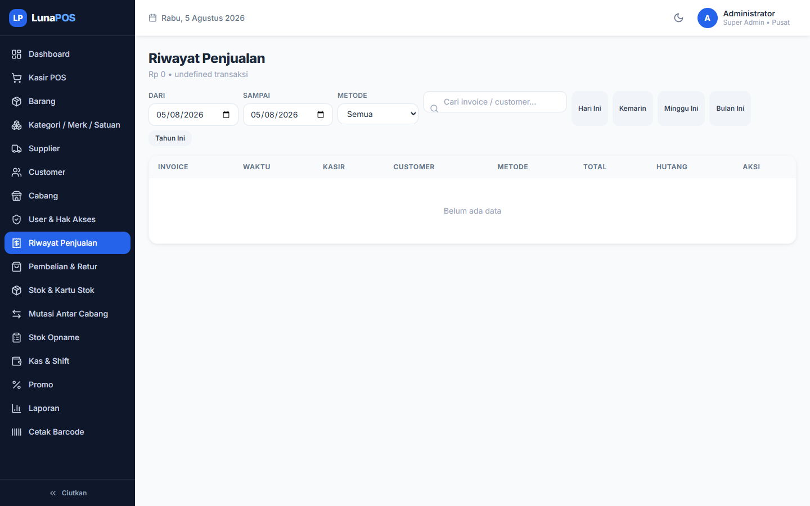
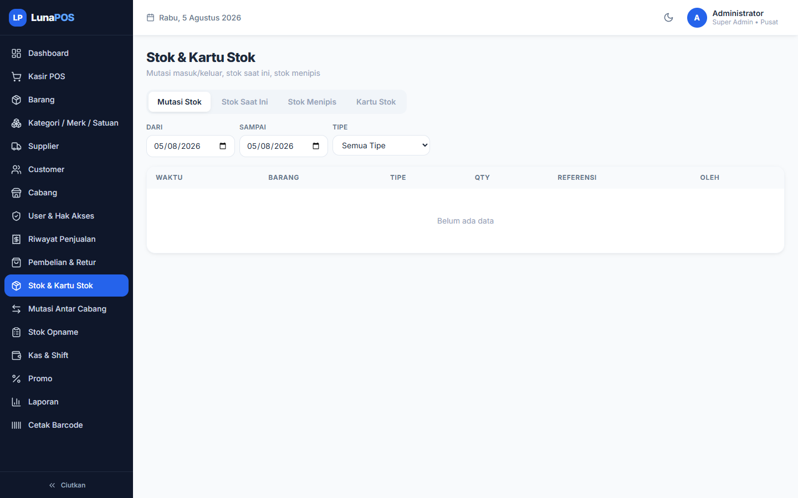
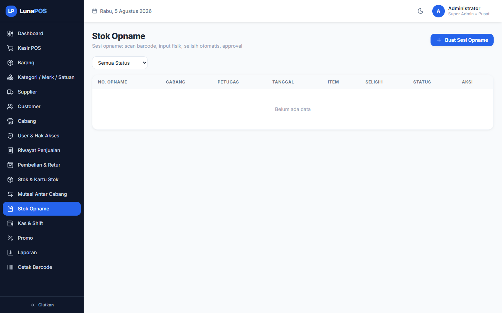
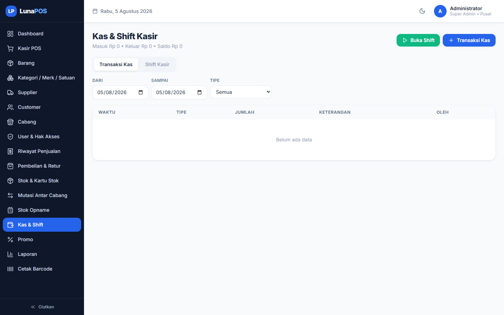
Setiap jenis pengguna punya batasan sendiri. C = boleh tambah, R = boleh lihat, U = boleh ubah, D = boleh hapus, "-" = tidak bisa apa-apa.
| Menu | Super Admin | Admin Pusat | Manager Cabang | Kasir | Gudang |
|---|---|---|---|---|---|
| Dashboard | R | R | R | R | R |
| Produk | CRUD | CRUD | CRU | R | CRU |
| Kategori/Merk/Satuan | CRUD | CRUD | CRU | - | CRU |
| Supplier | CRUD | CRUD | CRU | - | CRU |
| Customer | CRUD | CRUD | CRU | CR | - |
| Cabang | CRUD | CRUD | R | - | - |
| User | CRUD | CRUD | R | - | - |
| Penjualan | CRUD | CRUD | CRUD | CR | R |
| Pembelian | CRUD | CRUD | CRU | - | CR |
| Retur | CRUD | CRUD | CRU | - | CRUD |
| Transfer | CRUD | CRUD | CRU | - | CRU |
| Opname | CRUD | CRUD | CRU | - | CRU |
| Stok | CRUD | CRUD | RU | R | CRUD |
| Kas | CRUD | CRUD | CRU | CR | - |
| Shift | CRUD | CRUD | CRU | CRU | - |
| Promo | CRUD | CRUD | R | - | - |
| Laporan | R | R | R | R | R |
| Barcode | CRUD | CRUD | CRUD | - | CRUD |
Gambar alur di bawah menunjukkan bagaimana proses bekerja langkah demi langkah. Cocok untuk memahami "jalan cerita" sebuah transaksi.
flowchart TD
A["Scan / cari barang"] --> B["Tambah ke keranjang"]
B --> C{"Promo aktif?"}
C -- "Ya" --> D["Barang gratis / diskon otomatis"]
C -- "Tidak" --> E["Total normal"]
D --> E
E --> F["Pilih cara bayar"]
F --> G["Isi uang / data hutang"]
G --> H["Cek stok"]
H -- "Kurang" --> I["Error: stok tidak cukup"]
H -- "Cukup" --> J["Simpan transaksi + kurangi stok"]
J --> K["Catat kas / piutang"]
K --> L["Cetak struk"]
flowchart TD
A["Buat permintaan pindah barang"] --> B["Status: menunggu"]
B --> C{"Persetujuan"}
C -- "Setujui" --> D["Cek stok cabang asal"]
D -- "Cukup" --> E["Stok keluar + masuk"]
E --> F["Status: disetujui"]
D -- "Kurang" --> G["Persetujuan gagal"]
C -- "Tolak" --> H["Status: ditolak"]
sequenceDiagram
participant U as Pengguna
participant F as Tampilan
participant A as Server
participant D as Database
U->>F: Isi nama & kata sandi
F->>A: Kirim data login
A->>D: Cari data pengguna
D-->>A: Data ditemukan
A->>A: Cocokkan kata sandi + buat tiket masuk
A-->>F: Beri tiket + data pengguna
F-->>U: Masuk ke Dashboard
Bagian ini khusus untuk programmer dan teknisi. Pengguna umum boleh melewatinya.
flowchart LR
subgraph Client ["React SPA :5173"]
UI["Komponen"] --> STORE["Zustand"]
STORE --> API["Axios client"]
end
subgraph Server ["Express API :5000"]
API --> MID["Middleware auth/rate-limit"]
MID --> ROUTES["Routes"]
ROUTES --> CTRL["Controllers"]
CTRL --> SVC["services/promo"]
CTRL --> HELP["utils/helpers"]
SVC --> DB[("MySQL")]
HELP --> DB
end
DB --> API
MySQL 8, 31 tabel, InnoDB, charset utf8mb4. Seluruh query menggunakan parameterized statements. Detail pada Bab 11 Database.
REST API dengan prefix /api. Response seragam: { success, message, data, meta }. Detail pada Bab 12 API Documentation.
{ id, username, role_id }Authorization: Bearer <token>auth memverifikasi token + memuat permission dari DB setiap requestrequirePerm(menu, aksi) untuk otorisasi; Super Admin bypass| Middleware | Fungsi |
|---|---|
| auth | Verifikasi JWT, muat user + permissions |
| requirePerm | Otorisasi per menu & aksi |
| errorHandler | Error terpusat (DB error, upload, JSON parse) |
| upload | Multer: 2MB, JPG/PNG/WEBP |
services/promo.js — engine promo BOGO & diskon: memuat promo aktif, mencocokkan target, menambahkan item gratis, menghitung diskon.
Belum tersedia pada source code — akses data langsung via pool query di controller (tanpa layer repository terpisah).
14 controller di backend/src/controllers/ menangani logika bisnis per modul (lihat bagian 20 pada DOKUMENTASI-SISTEM.md).
Belum tersedia pada source code — tidak menggunakan ORM; skema didefinisikan di database/schema.sql.
Peta lokasi file-file sistem. Berguna untuk programmer yang baru bergabung.
lunapos/
├── package.json # Perintah utama (jalankan semua)
├── database/
│ ├── schema.sql # Struktur 31 tabel + relasi + index
│ └── seed.sql # Data contoh awal
├── backend/
│ ├── scripts/ # init-db.js, smoke-test.js
│ ├── uploads/ # Foto barang
│ └── src/
│ ├── index.js # Titik masuk server
│ ├── config/db.js # Koneksi database
│ ├── controllers/ # 14 pengatur logika
│ ├── middleware/ # auth, errorHandler, upload
│ ├── routes/index.js # Daftar layanan API
│ ├── services/promo.js # Mesin promo
│ └── utils/helpers.js # Alat bantu umum
└── frontend/
├── vite.config.js # Pengaturan proxy
└── src/
├── api/ # Pemanggil API
├── components/ # 10 komponen tampilan
├── pages/ # 19 halaman
├── stores/ # Penyimpanan data tampilan
└── utils/ # format, toast, confirm
| Folder | Fungsi |
|---|---|
| backend/src/controllers | Logika bisnis per modul |
| backend/src/middleware | Keamanan (JWT), penanganan error, upload |
| backend/src/routes | Daftar layanan API |
| backend/src/services | Mesin promo |
| backend/src/utils | Alat bantu: response, pagination, audit, mutasi stok |
| frontend/src/pages | Halaman aplikasi |
| frontend/src/components | Komponen tampilan yang dipakai berulang |
| frontend/src/stores | Penyimpanan data tampilan (Zustand) |
| frontend/src/api | Pemanggil API |
Database adalah "gudang data" sistem. Bagian ini menjelaskan tabel-tabel dan hubungannya.
erDiagram
ROLES ||--o{ USERS : "memiliki"
ROLES ||--o{ PERMISSIONS : ""
BRANCHES ||--o{ USERS : ""
BRANCHES ||--o{ SALES : ""
USERS ||--o{ SALES : "kasir"
CUSTOMERS ||--o{ SALES : ""
SALES ||--o{ SALE_ITEMS : ""
SALES ||--o{ RECEIVABLES : ""
SALES ||--o{ SALE_HOLDS : ""
PRODUCTS ||--o{ PRODUCT_UNITS : ""
PRODUCTS ||--o{ PRODUCT_STOCKS : ""
PRODUCTS ||--o{ SALE_ITEMS : ""
CATEGORIES ||--o{ PRODUCTS : ""
BRANDS ||--o{ PRODUCTS : ""
UNITS ||--o{ PRODUCTS : ""
BRANCHES ||--o{ PURCHASES : ""
SUPPLIERS ||--o{ PURCHASES : ""
PURCHASES ||--o{ PURCHASE_ITEMS : ""
PURCHASES ||--o{ DEBTS : ""
DEBTS ||--o{ DEBT_PAYMENTS : ""
PURCHASES ||--o{ PURCHASE_RETURNS : ""
PURCHASE_RETURNS ||--o{ PURCHASE_RETURN_ITEMS : ""
PRODUCTS ||--o{ STOCK_MOVEMENTS : ""
BRANCHES ||--o{ STOCK_MOVEMENTS : ""
BRANCHES ||--o{ STOCK_TRANSFERS : ""
STOCK_TRANSFERS ||--o{ STOCK_TRANSFER_ITEMS : ""
STOCK_OPNAMES ||--o{ STOCK_OPNAME_ITEMS : ""
BRANCHES ||--o{ SHIFTS : ""
SHIFTS ||--o{ CASH_TRANSACTIONS : ""
PROMOTIONS ||--o{ PROMO_ITEMS : ""
| Kelompok | Tabel |
|---|---|
| Hak akses | roles, permissions |
| Organisasi | branches (cabang), users (pengguna) |
| Barang | categories, brands, units, products, product_units, product_stocks |
| Pihak | suppliers (pemasok), customers (pelanggan) |
| Penjualan | sales, sale_items, sale_holds |
| Pembelian | purchases, purchase_items, purchase_returns, purchase_return_items |
| Stok | stock_movements, stock_transfers, stock_transfer_items, stock_opnames, stock_opname_items |
| Kas | shifts, cash_transactions |
| Keuangan | debts, debt_payments, receivables, receivable_payments |
| Promo | promotions, promo_items |
| Audit | audit_logs (catatan aktivitas) |
id.API adalah "layanan" yang dipanggil aplikasi untuk menyimpan/mengambil data. Tabel di bawah merangkum semua layanan.
| Method | Endpoint | Fungsi | Request | Response |
|---|---|---|---|---|
| POST | /auth/login | Login | {username, password} | {token, user} |
| POST | /auth/refresh | Perbarui tiket | Bearer token | {token} |
| GET | /auth/me | Data pengguna | - | user + permissions |
| GET/POST/PUT/DELETE | /users, /users/:id | Kelola pengguna | data user | list/detail/sukses |
| GET/PUT | /users/:id/permissions | Hak akses | {permissions:[...]} | list/sukses |
| GET/POST/PUT/DELETE | /branches | Kelola cabang | data cabang | list/detail/sukses |
| GET/POST/PUT/DELETE | /categories, /brands, /units | Data dasar | {name,...} | list/detail/sukses |
| GET/POST/PUT/DELETE | /products, /products/:id | Kelola barang | produk + units | list/detail/sukses |
| POST | /products/generate-barcode | Buat barcode | {product_id, format} | {barcode} |
| POST | /products/:id/adjust-stock | Ubah stok manual | {branch_id, qty, note} | sukses |
| GET/POST/PUT/DELETE | /suppliers, /customers | Data pemasok/pelanggan | data pihak | list/detail/sukses |
| GET | /suppliers/:id/debts, /customers/:id/receivables | Hutang/piutang | - | list |
| POST | /sales | Simpan transaksi kasir | items + payment | {invoice_no, total} |
| GET | /sales | Daftar penjualan | filter + page | list + meta |
| POST | /sales/:id/void | Batalkan transaksi | - | sukses |
| POST | /sales/hold, GET /sales/holds | Simpan & panggil keranjang | keranjang | {id, hold_no} |
| POST | /sales/receivables/:id/pay | Bayar piutang | {amount, method} | sukses |
| POST | /purchases | Simpan pembelian | items + supplier | {purchase_no, total} |
| POST | /purchases/returns | Retur pembelian | {purchase_id, items} | sukses |
| GET | /stock/movements, /stock/card, /stock/low | Data stok | filter | list/kartu |
| POST | /stock/transfers, /:id/approve|reject | Pindah stok | {to_branch_id, items} | {transfer_no} |
| POST/GET | /stock/opnames, /:id/* | Opname | data opname | sesi/items |
| POST | /cash/shifts/open, /:id/close | Shift kasir | {opening_cash}/{physical_cash} | {difference} |
| GET/POST | /cash/transactions | Transaksi kas | {type, amount, note} | list/sukses |
| GET/POST/PUT/DELETE | /promotions | Kelola promo | data promo | list/detail/sukses |
| GET | /reports/dashboard | Data dashboard | - | summary + charts |
| GET | /reports/sales|purchases|cash|stock|debts|monthly | Laporan | period + breakdown | {summary, rows} |
| GET | /barcode/labels, /barcode/scan/:code | Barcode | product_ids / code | labels/produk |
POST /api/auth/login
{
"username": "admin",
"password": "password123"
}
{
"success": true,
"message": "Login berhasil",
"data": {
"token": "eyJhbGciOi...",
"user": { "id": 1, "username": "admin", "role_name": "Super Admin" }
}
}
POST /api/sales
{
"items": [ { "product_id": 1, "unit_id": 1, "qty": 2, "price": 5000 } ],
"payment_method": "cash",
"total_paid": 10000
}
{
"success": true,
"message": "Transaksi berhasil",
"data": { "id": 10, "invoice_no": "INV-20260805-0001", "total": 10000 }
}
Aturan-aturan penting yang dipatuhi sistem secara otomatis.
| # | Aturan (bahasa sederhana) |
|---|---|
| 1 | Stok disimpan dalam satuan dasar; semua satuan lain dikonversi otomatis. |
| 2 | Stok tidak boleh minus — sistem menolak jika stok kurang. |
| 3 | Setiap pergerakan stok selalu dicatat (kapan, siapa, berapa). |
| 4 | Promo beli gratis menambahkan barang gratis otomatis (tidak mengurangi stok). |
| 5 | Diskon promo hanya berlaku untuk barang yang sesuai sasaran. |
| 6 | Kasir hanya bisa mengubah harga jika diberi izin. |
| 7 | Penjualan hutang wajib memilih pelanggan dan tanggal jatuh tempo. |
| 8 | Pembatalan transaksi mengembalikan stok dan menutup piutang. |
| 9 | Retur tidak boleh melebihi jumlah yang dibeli. |
| 10 | Pindah barang antar cabang butuh persetujuan; stok pindah hanya setelah disetujui. |
| 11 | Opname: buka → kirim → setujui/tolak; input jumlah hanya saat sesi masih terbuka. |
| 12 | Kasir hanya boleh punya satu shift terbuka dalam satu cabang. |
| 13 | Saat shift ditutup, sistem menghitung perkiraan kas dan selisihnya. |
| 14 | Nomor dokumen berurutan per hari (contoh: INV-20260805-0001). |
| 15 | Data dasar yang "dihapus" hanya dinonaktifkan, tidak hilang permanen. |
| 16 | Setiap tindakan penting dicatat (siapa melakukan apa, kapan). |
| 17 | Hak akses per menu: lihat / tambah / ubah / hapus; Super Admin bebas. |
| 18 | Hutang/piutang berstatus: belum lunas → sebagian → lunas. |
| 19 | Stok dianggap menipis jika jumlahnya ≤ stok minimum. |
Saat terjadi masalah, sistem menampilkan pesan yang jelas. Ini cara sistem menanganinya.
| Jenis Error | Contoh | Penanganan |
|---|---|---|
| Error Login | Nama/kata sandi salah, akun nonaktif | Muncul pesan kesalahan |
| Error Validasi | Kolom wajib kosong, format salah | Pesan per kolom di form |
| Error API | Halaman/layanan tidak ditemukan | Pesan standar dari sistem |
| Error Database | Data duplikat, data sedang dipakai | Pesan yang mudah dipahami |
| Error Permission | Mengakses menu tanpa izin | Ditolak dengan pesan 401/403 |
| Error Upload | File terlalu besar / format salah | Pesan upload gagal |
| Error Stok | Stok tidak cukup | Pesan berisi jumlah stok yang ada |
Masalah umum dan cara mengatasinya — mulai dari yang paling sering terjadi.
| Masalah | Penyebab | Solusi |
|---|---|---|
| Halaman tidak bisa dibuka | Server tidak menyala | Jalankan backend & frontend; cek alamat /api/health |
| Login gagal | Kata sandi salah / akun nonaktif | Minta admin reset kata sandi; pastikan akun aktif |
| Keluar sendiri / login ulang | Tiket masuk kedaluwarsa (12 jam) | Login ulang; sistem biasanya memperbarui otomatis |
| Scan barcode tidak ketemu | Barcode belum terdaftar | Buat barcode di menu Barang, atau tambah barang baru |
| Kamera scan tidak muncul | Browser belum diberi izin kamera | Izinkan kamera; akses lewat localhost/HTTPS |
| Stok tidak cukup | Barang memang tinggal sedikit | Kurangi jumlah, atau isi stok via Pembelian |
| Data duplikat saat simpan | Kode/nama/barcode sudah dipakai | Periksa nilai unik; pakai kode otomatis |
| Transfer tidak bisa disetujui | Stok cabang asal kurang | Isi stok asal dulu, atau tolak permintaan |
| Laporan kosong | Periode/filter tidak cocok | Cek rentang tanggal dan data transaksi |
| Upload foto gagal | File lebih dari 2 MB / format salah | Pakai JPG/PNG/WEBP di bawah 2 MB |
| Export CSV berantakan di Excel | Masalah encoding | Buka dengan UTF-8; file sudah siap |
Pertanyaan yang sering diajukan pengguna, dengan jawaban sederhana.
Buka menu Barang → Tambah Barang → isi data → Simpan. Stok awal 0 di semua cabang; isi stok lewat menu Pembelian atau penyesuaian stok.
Barang bisa punya beberapa satuan (pcs/lusin/dus) dengan nilai konversi. Contoh: 1 dus = 12 lusin = 144 pcs. Menjual dalam satuan apa pun otomatis dihitung ke satuan dasar.
Jika promo aktif (misal "Beli 2 Gratis 1"), sistem otomatis menambahkan barang gratis ke keranjang. Barang gratis tidak mengurangi stok dan nilainya 0.
Bisa, lewat tombol Void di Riwayat Penjualan. Stok kembali dan piutang ditutup. Tindakan ini tidak bisa dibatalkan lagi.
Di layar pembayaran POS, pilih cara bayar Hutang, pilih pelanggan, isi tanggal jatuh tempo. Piutang tercatat dan bisa dibayar sebagian nanti.
Ketika jumlah stok ≤ stok minimum barang. Terlihat di Dashboard dan menu Stok (tab Stok Menipis).
Tidak. Aplikasi butuh koneksi ke server dan database. Untuk kasir, pastikan jaringan lokal stabil.
Semua jenis pengguna bisa melihat laporan. Admin pusat melihat semua cabang; pengguna cabang hanya cabangnya sendiri.
Kebiasaan baik agar penggunaan LunaPOS aman dan rapi.
| Variabel | Standar | Keterangan |
|---|---|---|
| PORT | 5000 | Port layanan |
| DB_HOST | 127.0.0.1 | Alamat database |
| DB_PORT | 3306 | Port database |
| DB_USER | root | Nama pengguna database |
| DB_PASSWORD | (kosong) | Kata sandi database |
| DB_NAME | lunapos | Nama database |
| JWT_SECRET | (wajib diisi) | Kunci rahasia tiket masuk |
| JWT_EXPIRES_IN | 12h | Masa berlaku tiket |
| UPLOAD_DIR | uploads | Folder penyimpanan file |
| MAX_FILE_SIZE | 2097152 (2MB) | Batas ukuran file |
| Username | Jenis | Cabang | Password |
|---|---|---|---|
| admin | Super Admin | Pusat | password123 |
| pusat | Admin Pusat | Pusat | password123 |
| manager | Manager Cabang | Jakarta | password123 |
| kasir1 | Kasir | Jakarta | password123 |
| kasir2 | Kasir | Bandung | password123 |
| gudang | Gudang | Jakarta | password123 |
database/schema.sql — struktur databasedatabase/seed.sql — data awalbackend/scripts/smoke-test.js — tes otomatis layanan